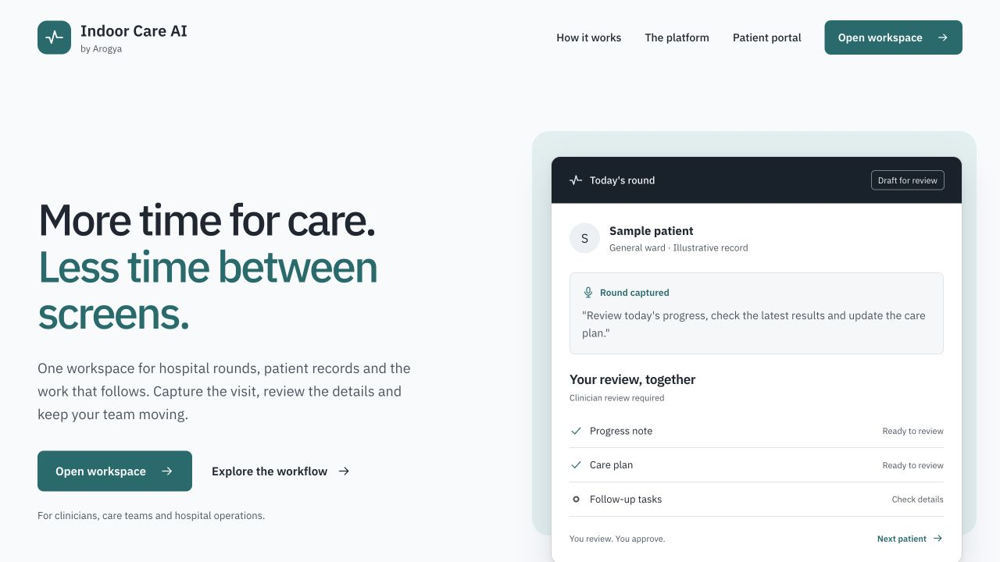
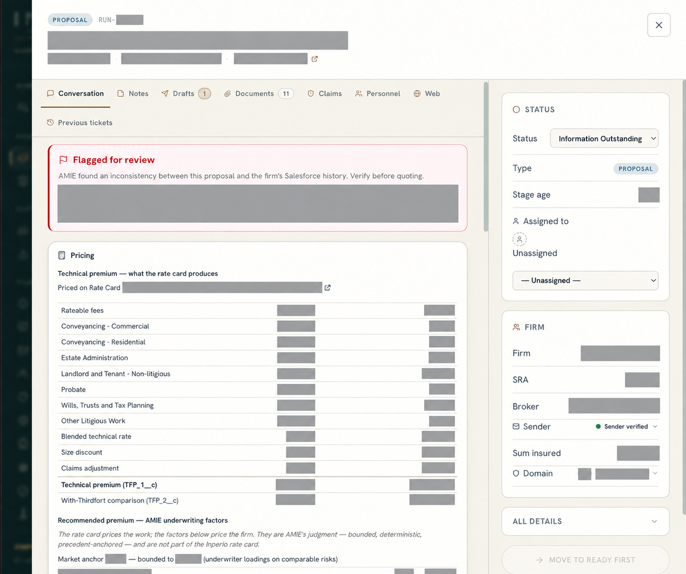
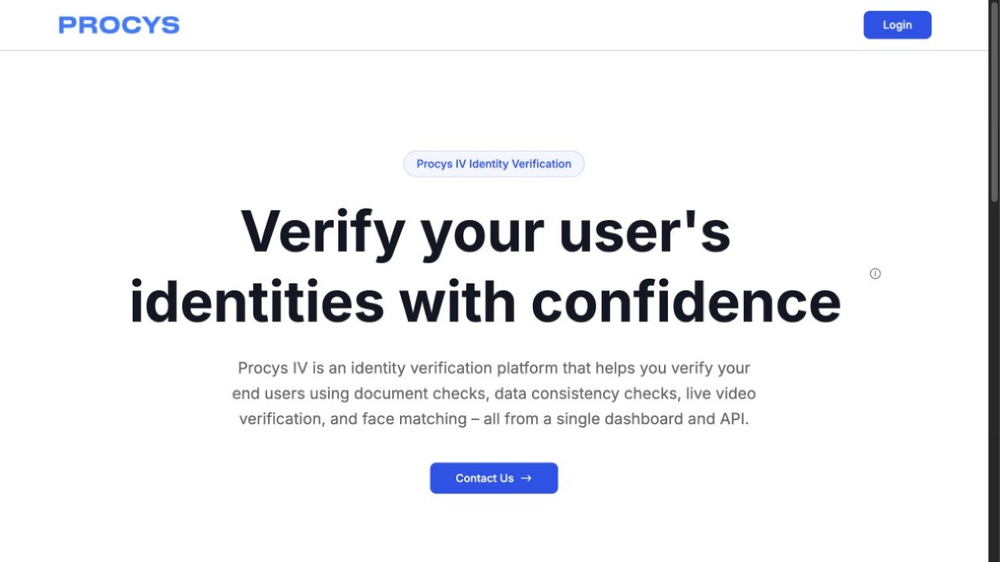
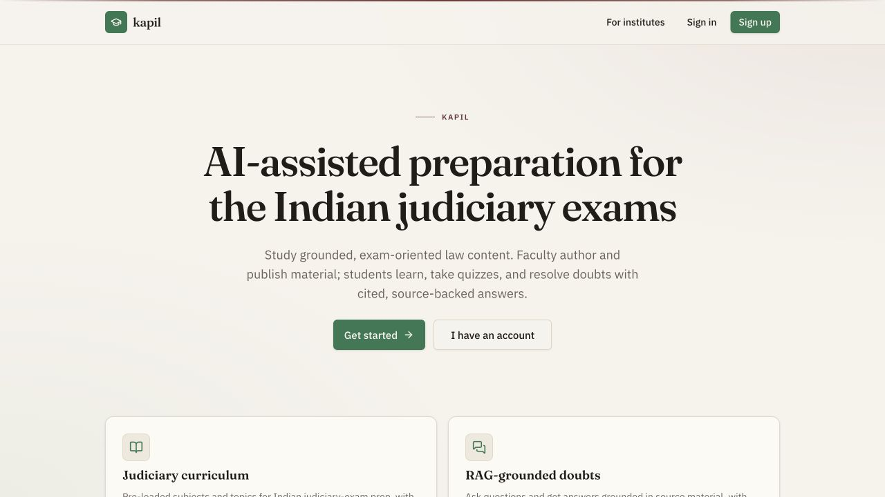

AI systems
& agents
Production agents that use the right context, tools and checks for the work they need to do.
- Permissioned MCP tools and LLM agents
- RAG over business and source material
- Evaluation, deployment and monitoring
Principal AI Engineer
I’m Kapil Chauhan, a Principal AI Engineer and AI automation consultant. I architect and ship LLM agents, RAG products and AI platforms that turn difficult workflows into reliable software. My work spans model selection, MCP tools, evaluation, deployment and monitoring.



I take AI work from a useful first workflow through the engineering needed to run it in production.
Production agents that use the right context, tools and checks for the work they need to do.
A clear route from a product question to a system your team can operate and improve.
Focused websites and web products remain available when the work calls for one.
Systems shaped around real workflows, with the engineering needed to evaluate and run them.
Submission and claim documents, evidence-linked analysis, underwriting rules and pricing context in one production workflow. Production outcome: £20,000 per month in operating savings.
Open Inperio ↗A production inpatient-care platform that reduces documentation and coordination work across rounds, records, diagnostics, pharmacy and billing. Clinicians review AI drafts before applying them. Production outcome: work accelerated across hundreds of doctors’ workloads.
Open Arogya / Aurora EHR ↗Production LLM agents for document processing and identity verification, with model selection, MCP tools, evaluation and monitoring across the workflow.
NueVantage SalesBot Compliance Bot
0-to-1 RAG products including NueVantage, SalesBot and Compliance Bot, with agent orchestration and enterprise integrations shaped through architecture and production planning.
Speech X English Writing Simulator
Speech X shipped plagiarism detection, AI-generated-content detection, spontaneous-speech classification and automatic grammar evaluation, alongside the first version of the English Writing Simulator.

AI-assisted judiciary exam preparation with faculty-reviewed material and answers grounded in source content.
A useful place to start
Choose a direction. Leave with a clearer brief for our first conversation.
An assistant grounded in approved sources and connected to tools with clear handoffs.
Track: AI system or agent Goal: Build a production AI assistant Budget: Let's scope it first Timing: Flexible First conversation: the workflow, source material, model choice and the path to production.
Email opens a draft for you to review and send.
The person behind the work
I’m a Principal AI Engineer with more than nine years in machine learning and software. I architect and ship LLM agents, RAG products and AI platforms that teams can run in production.
I work across model selection, product definition, cloud architecture, evaluation, deployment and monitoring. I also own technical direction and mentor AI teams.
More about my backgroundLead AI Engineer
Production LLM agents, document workflows, MCP tools, evaluation and monitoring.
Senior Solution Architect, AI/ML
0-to-1 RAG products, agent orchestration, enterprise integrations and technical architecture.
Senior Machine Learning Engineer
Speech X assessment features and the English Writing Simulator, built from the first version.
Google Cloud Certified Professional Data Engineer. Earlier work at Big Plasma and Virtual Doctor.
Explore my code ↗Read my writing ↗Bring an AI product, agent or workflow that needs a production path. Focused websites and web products are available too.
A free 30-minute conversation.
kapilnchauhan77@gmail.comBased in India. Working remotely.